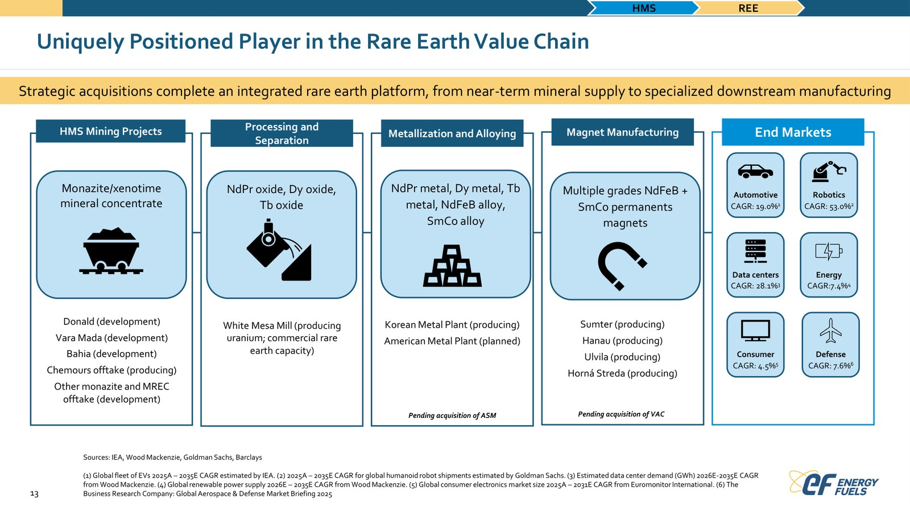
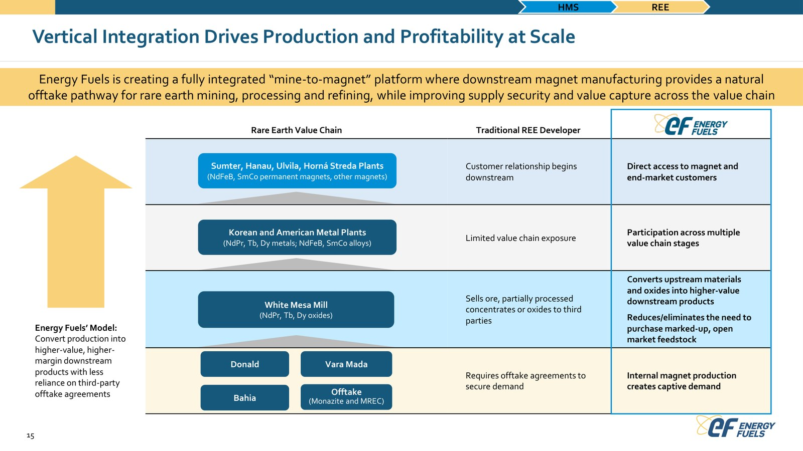
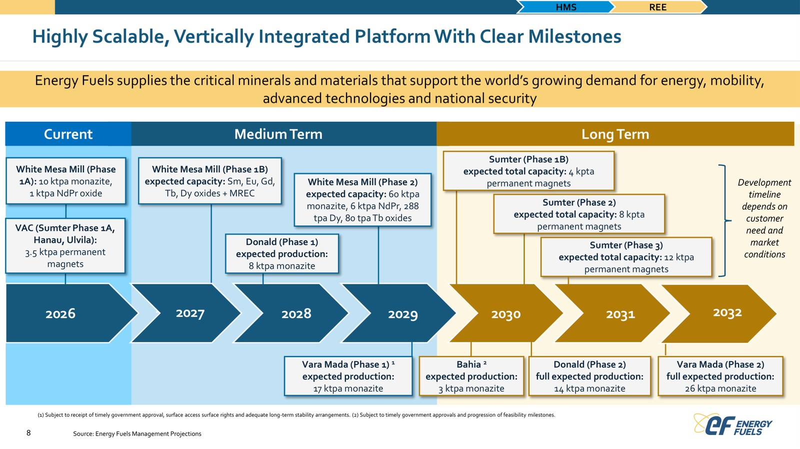

ENERGY FUELS 🇺🇸 (NYSE American:UUUU)
Model biznesowy w obrazach

Zintegrowana platforma: od koncentratu mineralnego przez przetwórstwo, metalurgię i stopy po magnesy i rynki końcowe. Źródło: Energy Fuels, prezentacja inwestorska (lipiec 2026).

Integracja pionowa mine-to-magnet: własna produkcja magnesów jako naturalny kanał zbytu zwiększający bezpieczeństwo dostaw i przechwytywanie wartości. Źródło: Energy Fuels, prezentacja inwestorska (lipiec 2026).

Skalowalna, zintegrowana platforma z kamieniami milowymi 2026-2032 (White Mesa Mill, monazyt, magnesy trwałe). Źródło: Energy Fuels, prezentacja inwestorska (lipiec 2026).
W kontekście: Wydobycie (upstream)
Czym jest spółka. Energy Fuels buduje działalność surowcową na dwóch powiązanych filarach: uranie oraz minerałach ciężkich zawierających monazyt, z którego można odzyskiwać pierwiastki ziem rzadkich. Obok koncentratów uranowych spółka raportuje segment Heavy Mineral Sands, natomiast właściwa separacja ziem rzadkich znajduje się w segmencie RE Carbonate. Oznacza to, że wydobycie i sprzedaż piasków mineralnych nie są tym samym co komercyjna produkcja separowanych tlenków REE.
Uran pozostaje działającym rdzeniem upstream. W 2025 r. spółka wydobyła materiał zawierający około 1 720 000 funtów U3O8, a White Mesa Mill wyprodukował około 1 015 000 funtów U3O8. Energy Fuels przedstawia się jako największy producent naturalnego koncentratu uranu w USA.
Monazyt ma pochodzić z portfela rozłożonego między co najmniej 3 kraje. Docelowe źródła obejmują własne aktywa, udziały w projektach oraz potencjalny zakup surowca od podmiotów zewnętrznych:
- Vara Mada na Madagaskarze, wcześniej Toliara: planowana zdolność produkcji monazytu wynosi 17 ktpa w Fazie 1 oraz 26 ktpa w Fazie 2. Prezentacja spółki przypisuje projektowi 1,8 mld USD NPV10%.
- Bahia w Brazylii: planowana produkcja 3 ktpa monazytu.
- Donald w Australii, rozwijany poprzez JV: planowana zdolność wynosi 8 ktpa w Fazie 1 i 14 ktpa w Fazie 2. Projekt jest powiązany z proponowanym przejęciem Australian Strategic Materials.
Ta geografia ma zapewnić surowiec dla White Mesa Mill, lecz wszystkie podane wielkości monazytu są planowanymi zdolnościami projektów, a nie zaraportowaną produkcją handlową. Faktyczna produkcja monazytu z tych projektów w 2025 r. i pierwszym półroczu 2026 r. jest NIE UJAWNIONA.
Znaczenie biznesowe: Energy Fuels próbuje przenieść doświadczenie z wydobycia i przerobu uranu na wieloźródłowy model pozyskiwania monazytu, ale skala upstream REE pozostaje oparta przede wszystkim na projektowanych mocach.
Dla inwestora: przy analizie portfela należy oddzielać działającą produkcję uranu od przyszłych wolumenów monazytu, ponieważ te drugie opisują potencjalną przepustowość, a nie zrealizowaną sprzedaż.
W kontekście: Separacja, rafinacja i metalurgia
Centralnym aktywem jest White Mesa Mill w Utah. Zakład jest jedynym licencjonowanym i działającym młynem uranowym w USA, a zarazem jedynym młynem w kraju zdolnym do produkcji separowanych REE. Jego licencjonowana przepustowość wynosi 2 000 ton rudy uranowej dziennie oraz ponad 8 000 000 funtów U3O8 rocznie.
W 2024 r. spółka zakończyła modyfikacje instalacji, które według opisu 10-K zapewniły zdolność wytwarzania do 850-1 000 ton rocznie separowanego NdPr z monazytu. Tabela techniczna tego samego raportu podaje 1 049 ton rocznie dla Fazy 1, zaznaczając, że rzeczywisty odzysk może się różnić. Różnica pomiędzy zakresem opisowym i wartością tabelaryczną pokazuje, że moc projektowa nie powinna być utożsamiana z osiągniętym wolumenem.
Plan rozbudowy nie ma jednej, całkowicie spójnej liczby. Według 10-K łączna docelowa zdolność Fazy 1 i planowanej Fazy 2 wynosi 6 562 ton NdPr rocznie, 60 ton Tb rocznie oraz 200 ton Dy rocznie. Sama Faza 1 obejmuje w tej tabeli 12 ton Tb i 35 ton Dy rocznie.
Prezentacja z lipca 2026 r. pokazuje natomiast:
- Fazę 1A o przepustowości 10 ktpa monazytu i mocy 1 ktpa tlenku NdPr.
- Fazę 2 o przepustowości 60 ktpa monazytu i mocy 6 ktpa NdPr, 288 ton Dy oraz 80 ton Tb rocznie.
Wartości z prezentacji i 10-K różnią się zwłaszcza dla ciężkich ziem rzadkich. Dostarczone materiały nie wyjaśniają, czy wynika to ze zmiany projektu, innej definicji faz, czy odmiennego zakresu produktu.
Kolejne ogniwa łańcucha mają pochodzić z przejęć. Proponowane przejęcie Australian Strategic Materials ma dodać kompetencje w metalach i stopach NdFeB, natomiast proponowane nabycie Vacuumschmelze ma wprowadzić Energy Fuels bezpośrednio do produkcji magnesów trwałych. Zakład VAC w Sumter ma osiągnąć po Fazie 3 zdolność 12 ktpa magnesów, przy oczekiwanej przez spółkę EBITDA run-rate przekraczającej 400 mln USD. Jest to prognoza dla pełnej mocy zakładu, nie zaraportowana EBITDA Energy Fuels.
Faktyczna produkcja REO, NdPr, Dy, Tb i magnesów przypisana Energy Fuels w 2025 r. oraz pierwszym półroczu 2026 r. jest NIE UJAWNIONA.
Znaczenie biznesowe: White Mesa Mill daje spółce istniejącą infrastrukturę separacji, ale przejście od instalacji i deklarowanych mocy do regularnej produkcji metali, stopów oraz magnesów wymaga jeszcze rozbudowy i domknięcia przejęć.
Dla inwestora: kluczowe jest rozdzielenie istniejącego obiektu, technicznej mocy projektowej, faktycznej produkcji i prognozowanej ekonomiki Sumter, ponieważ każda z tych kategorii ma inny poziom dojrzałości operacyjnej.
W kontekście: Dywersyfikacja i budowa łańcucha poza Chinami
Energy Fuels próbuje złożyć poza Chinami cały ciąg od minerału do gotowego magnesu: monazyt z Madagaskaru, Brazylii i Australii, separację w Utah, stopy NdFeB poprzez ASM oraz magnesy poprzez VAC. Spółka określa docelową pozycję po transakcjach jako największy, w pełni zintegrowany producent typu mine-to-metal and alloy poza Chinami. Jest to jednak cel warunkowy, ponieważ integracja nie jest jeszcze ukończona.
Kontekst rynkowy jest wyraźny: w 2024 r. zależność importowa netto USA od związków i metali REE wynosiła 80%. Chiny wydobyły w tym samym roku 270 000 ton REO wobec 390 000 ton produkcji światowej, co odpowiadało 69,2% globalnego wydobycia. Te dane dotyczą rynku, a nie udziału Energy Fuels.
Najważniejsze elementy budowy łańcucha to obecnie transakcje i finansowanie:
- Proponowana cena nabycia VAC obejmuje 718 mln USD gotówki oraz emisję 65 853 000 akcji zwykłych Energy Fuels. Dodatkowy mechanizm preferencyjnego wyrównania wartości może sięgnąć 135 mln USD, a kwota związana z escrow wynosi 12,5 mln USD. Referencyjna cena akcji użyta w mechanizmie wyrównania to 20,93 USD.
- Goldman Sachs zobowiązał się do finansowania w formie senior secured term loan o wartości 250 mln USD na potrzeby transakcji VAC.
- Transakcja ASM została wyceniona na około 447 mln AUD według ceny z 16 stycznia 2026 r. Parytet wynosi 0,053 akcji Energy Fuels lub CDI za każdą akcję ASM, z możliwością wypłaty do 0,13 AUD na akcję ASM w formie specjalnej dywidendy. Byli akcjonariusze ASM mieliby po zamknięciu posiadać około 5,8% akcji Energy Fuels.
- Przejęcie ASM pozostawało niezamknięte w prezentacji z lipca 2026 r., mimo wcześniejszego oczekiwania zamknięcia około czerwca 2026 r.
- Spółka otrzymała warunkowe zobowiązanie pożyczkowe w wysokości 725 mln USD od amerykańskiego Office of Strategic Capital, działającego w ramach Department of War. Planowany tenor wynosi 20 lat. Finansowanie ma wspierać rozbudowę White Mesa Mill i łańcucha REE, ale nie zostało przedstawione jako uruchomiona pożyczka.
Dodatkową opcją pozyskiwania surowca są porozumienia z Torngat Metals, Aclara Resources, Cyclic Materials oraz Pensana - to czterej wymienieni partnerzy wśród licznych MOU, bez ujawnionych wolumenów, cen, wartości ani wiążącego charakteru.
Znaczenie biznesowe: strategia dywersyfikacji łączy istniejący amerykański zakład z aktywami na kilku kontynentach, ale jej pełna realizacja zależy od transakcji, finansowania i uruchomienia projektów surowcowych.
Dla inwestora: deklarowana integracja poza Chinami powinna być oceniana jako sekwencja warunkowych etapów, a nie jako już działający, jednolity łańcuch kopalnia-separacja-stop-magnes.
Ekspozycja na REE w liczbach
Przychody grupy rosną i spadają niezależnie od REE, ponieważ segment REE nie generował przychodu w FY2024 ani FY2025. Skonsolidowany przychód FY2025 wyniósł 65,922 mln USD, wobec 78,114 mln USD w FY2024, czyli spadł o 15,6% r/r. W pierwszym kwartale 2026 r. przychód wyniósł 35,838 mln USD, wobec 16,898 mln USD w pierwszym kwartale 2025 r.
Segment RE Carbonate wykazał:
- 0 USD przychodu w FY2025.
- 0 USD przychodu w FY2024.
- 2,848 mln USD przychodu w FY2023, co odpowiadało 7,5% przychodów grupy.
- 0 USD przychodu zarówno w pierwszym kwartale 2026 r., jak i w pierwszym kwartale 2025 r.
Segment HMS, obejmujący piaski mineralne, ale niebędący równoznaczny ze sprzedażą separowanych REE, wypracował 15,821 mln USD przychodu w FY2025, wobec 39,874 mln USD w FY2024.
Koszty REE narastają przed przychodami. Strata operacyjna segmentu RE Carbonate wyniosła 19,427 mln USD w FY2025, wobec 13,336 mln USD w FY2024. W pierwszym kwartale 2026 r. wyniosła około 5,9 mln USD, wobec około 3,6 mln USD rok wcześniej. Dwie kwartalne wartości są przybliżone i powinny być traktowane z ostrożnością.
Na poziomie całej spółki strata netto przypisana Energy Fuels wyniosła 85,634 mln USD w FY2025, wobec 47,765 mln USD w FY2024, co oznacza pogłębienie straty o 79,3%. Podstawowy EPS za FY2025 wyniósł -0,38 USD.
Produkcja fizyczna REE: wolumeny rzeczywiście wyprodukowanych ton REO, NdPr i magnesów w 2025 r. oraz pierwszym półroczu 2026 r. są NIE UJAWNIONE. Dostępne wielkości od 1 ktpa do 12 ktpa odnoszą się do zdolności istniejących, planowanych albo docelowych, nie do sprzedaży zrealizowanej.
Skonsolidowana EBITDA: NIE UJAWNIONE w dostarczonych dowodach. Wskazane ponad 400 mln USD dotyczy oczekiwanej EBITDA run-rate zakładu Sumter przy docelowej mocy 12 ktpa, a nie historycznego wyniku grupy.
Gotówka: NIE UJAWNIONE w dostarczonych dowodach.
pie title Przychody od trzech ujawnionych dużych klientów FY2025 - mln USD "Klient 1 - uran": 17.158 "Klient 2 - HMS": 15.365 "Klient 3 - uran": 7.700
Wykres obejmuje wyłącznie trzech ujawnionych klientów przekraczających próg istotności, a nie cały przychód grupy. Źródło: Energy Fuels 10-K FY2025.
Znaczenie biznesowe: działalność REE zużywa środki i generuje stratę operacyjną, podczas gdy przychód spółki nadal pochodzi z uranu i HMS.
Dla inwestora: najważniejszą miarą postępu nie jest dziś dynamika skonsolidowanego przychodu, lecz przejście segmentu REE od deklarowanej mocy do ujawnionej produkcji, sprzedaży oraz ekonomiki jednostkowej.
Kluczowe umowy - co znaczą
Finansowanie rządowe jest warunkowe. Zobowiązanie Office of Strategic Capital opiewa na 725 mln USD z tenorem 20 lat, lecz pozostaje warunkowym zobowiązaniem finansowym, a nie gotówką już otrzymaną przez Energy Fuels. Historyczna wartość otrzymanych przed 2026 r. dotacji lub kontraktów DoD, DLA albo DOE związanych z REE jest NIE UJAWNIONA.
Finansowanie VAC ma konkretną kwotę, ale służy przejęciu. Zobowiązanie Goldman Sachs obejmuje 250 mln USD długu zabezpieczonego. Sama proponowana zapłata za VAC obejmuje 718 mln USD gotówki, 65 853 000 akcji zwykłych, potencjalnie do 135 mln USD akcji uprzywilejowanych oraz 12,5 mln USD objęte mechanizmem escrow. Nie jest to kontrakt sprzedażowy ani offtake na magnesy.
ASM pozostaje transakcją warunkową. Wartość około 447 mln AUD, parytet 0,053 akcji lub CDI, możliwa wypłata do 0,13 AUD na akcję i prognozowany udział byłych akcjonariuszy ASM na poziomie 5,8% opisują konstrukcję przejęcia. Nie dowodzą jednak jego zamknięcia. Najnowszy dostarczony materiał nadal nazywa transakcję proponowaną i uzależnioną od spełnienia warunków.
MOU upstream nie są twardymi zamówieniami. Energy Fuels wskazuje 4 partnerów: Torngat Metals, Aclara Resources, Cyclic Materials i Pensana. Wartość, wolumen, cena, termin dostaw oraz status wiążący tych MOU są NIE UJAWNIONE. W konsekwencji nie można ich sumować jako zakontraktowanego wsadu dla White Mesa Mill.
Kontrakty uranowe są liczniejsze i bardziej zaawansowane, ale słabo opisane. Spółka ma 6 długoterminowych umów z dużymi zakładami energetycznymi. Nazwy klientów, ceny, wolumeny i ewentualne mechanizmy floor są NIE UJAWNIONE. Łączna remaining performance obligation na 31 marca 2026 r. wynosiła 173,430 mln USD, przy czym dotyczyła w przeważającej mierze uranu, a nie REE.
Nie ujawniono wiążącego kontraktu take-or-pay na REE, ceny sprzedaży NdPr, zakontraktowanego wolumenu magnesów ani przedpłat od odbiorców REE.
Znaczenie biznesowe: najtwardsze ujawnione kwoty dotyczą finansowania i przejęć, natomiast handlowe zabezpieczenie popytu oraz dostaw surowca dla REE pozostaje oparte na MOU bez ujawnionych parametrów.
Dla inwestora: RPO uranowe, warunkowa pożyczka rządowa, finansowanie przejęcia i niewycenione MOU nie są zamiennymi miarami pewności, dlatego nie powinny być agregowane jako jeden portfel zamówień REE.
Pozycja rynkowa i udziały
Energy Fuels zajmuje pozycję największego producenta naturalnego koncentratu U3O8 w USA. White Mesa Mill jest zarazem jedynym amerykańskim obiektem z istniejącymi komercyjnymi zdolnościami przerobu monazytu oraz jedynym działającym młynem uranowym w USA zdolnym do produkcji separowanych REE.
Zakład Sumter należący do VAC jest przedstawiany jako pierwszy zaawansowany zakład magnesów trwałych na skalę przemysłową w USA, który już produkuje. Z perspektywy Energy Fuels jest to jednak aktywo objęte proponowaną transakcją, a nie dowód, że grupa już skonsolidowała jego produkcję.
Udział Energy Fuels w rynku REE, NdPr lub magnesów: NIE UJAWNIONE.
Wielkość rynku REE w USD: NIE UJAWNIONE.
Skala rynku w wolumenie: światowa produkcja górnicza wyniosła 390 000 ton REO w 2024 r., z czego Chiny odpowiadały za 270 000 ton, czyli 69,2%. Planowane 6 ktpa NdPr w Fazie 2 White Mesa Mill jest zdolnością jednego produktu i nie może być bezpośrednio porównywane z globalnym wydobyciem wszystkich REO.
Znaczenie biznesowe: pozycja spółki opiera się obecnie bardziej na unikalności infrastruktury w USA niż na ujawnionym udziale w sprzedaży REE.
Dla inwestora: określenia „jedyny” i „największy” mają tu wąskie definicje technologiczne lub geograficzne i nie zastępują danych o faktycznej produkcji, udziale w rynku ani przychodzie z REE.
Mechanika konkurencji - na osiach
Klasa złoża i surowiec. Energy Fuels opiera model na monazycie z co najmniej 3 krajów, podczas gdy MP Materials jest kojarzony z dużą skalą złoża bastnazytowego Mountain Pass, a Lynas z łańcuchem Australia-Malezja. Wieloźródłowość może ograniczać zależność od jednego projektu, ale średnia zawartość TREO w złożach Energy Fuels jest NIE UJAWNIONA, więc nie można liczbowo porównać jakości rudy i uzysków z konkurentami.
Koszt. Jednostkowy koszt produkcji, w tym AISC separowanego NdPr lub monazytu w White Mesa Mill, jest NIE UJAWNIONY. Bez tej informacji nie można stwierdzić, czy wykorzystanie istniejącego zakładu kompensuje koszty transportu surowca z Madagaskaru, Brazylii lub Australii.
Integracja pionowa. Istniejąca przewaga Energy Fuels znajduje się w środku łańcucha: White Mesa Mill już ma komercyjną zdolność przerobu monazytu i pozostaje jedynym takim obiektem w USA. Produkcja stopów i magnesów ma zostać dodana przez ASM i VAC, ale przejęcie ASM pozostawało niezamknięte w lipcu 2026 r., a pełna moc Sumter 12 ktpa jest wartością docelową. MP Materials i Lynas podgryzają ten model skalą surowcową i własnymi programami budowy dalszych etapów łańcucha.
Zależność od Chin. Przewagą narracyjną Energy Fuels jest lokalizacja separacji w USA oraz geograficzna dywersyfikacja monazytu. Ma to znaczenie w kraju, którego zależność importowa netto od związków i metali REE wynosiła 80% w 2024 r., przy chińskim udziale 69,2% w światowym wydobyciu REO. Nie ujawniono jednak pełnej mapy dostaw odczynników, urządzeń i komponentów, więc całkowity stopień uniezależnienia od Chin jest NIE UJAWNIONY.
Wsparcie państwa. Warunkowa pożyczka 725 mln USD może ograniczyć ciężar finansowania rozbudowy, ale do czasu spełnienia warunków nie jest uruchomionym kapitałem. Konkurencja dysponująca działającą produkcją, finansowaniem państwowym lub wcześniej zakontraktowanymi odbiorcami może szybciej przekształcać moce w przychód.
Skala kontra realizacja. Energy Fuels pokazuje potencjalny ciąg obejmujący 60 ktpa monazytu, 6 ktpa NdPr, 288 ton Dy, 80 ton Tb oraz 12 ktpa magnesów, lecz wielkości te należą do różnych faz i aktywów. Ich wspólne zestawienie opisuje architekturę docelową, nie bieżącą zdolność całej grupy do wytworzenia i sprzedaży gotowego magnesu.
Znaczenie biznesowe: spółka wygrywa dostępem do istniejącej infrastruktury separacji w USA, lecz przegrywa przejrzystością kosztów, jakości złóż i rzeczywistych wolumenów komercyjnych.
Dla inwestora: przewagę konkurencyjną należy mierzyć tempem konwersji planowanych mocy w produkcję i kontrakty, ponieważ sama integracja deklarowana po przejęciach nie przesądza o kosztach ani niezawodności łańcucha.
Koncentracja odbiorców i ryzyka
Trzech ujawnionych dużych klientów odpowiadało za 61,0% przychodów FY2025. Struktura była następująca:
- Klient 1 segmentu uranowego wygenerował 17,158 mln USD, czyli 26,0% przychodów grupy.
- Klient 2 segmentu HMS wygenerował 15,365 mln USD, czyli 23,3% przychodów grupy.
- Klient 3 segmentu uranowego wygenerował 7,7 mln USD, czyli 11,7% przychodów grupy.
Koncentracja wewnątrz HMS jest jeszcze większa: Klient 2 odpowiadał za 97,1% przychodu całego segmentu HMS w FY2025. Mechanizm ryzyka jest bezpośredni: utrata lub ograniczenie zakupów jednego odbiorcy mogłoby niemal wyzerować sprzedaż HMS, która pozostaje istotnym źródłem przychodu przed komercjalizacją REE. Nazwy klientów są NIE UJAWNIONE.
Ryzyko przedprzychodowego REE. Segment RE Carbonate wykazał 0 USD przychodu przez 2 kolejne lata obrotowe, FY2024 i FY2025, jednocześnie generując w FY2025 stratę operacyjną 19,427 mln USD. Mechanizm polega na ponoszeniu kosztów instalacji, rozwoju procesów i organizacji łańcucha przed potwierdzeniem powtarzalnej sprzedaży.
Ryzyko skali produkcji. Faktyczne wolumeny REO, NdPr i magnesów za 2025 r. oraz pierwsze półrocze 2026 r. są NIE UJAWNIONE, podczas gdy komunikowana moc White Mesa Mill wynosi od 850-1 000 ton NdPr rocznie w opisie Fazy 1 do 1 049 ton rocznie w tabeli technicznej. Mechanizm ryzyka polega na tym, że nominalna przepustowość może nie przełożyć się na uzysk, jakość, dostępność instalacji ani sprzedaż.
Ryzyko niespójności planów rozbudowy. Łączna moc NdPr według 10-K wynosi 6 562 ton rocznie, natomiast prezentacja z lipca 2026 r. wskazuje 6 ktpa dla Fazy 2. Dla Dy i Tb rozbieżność jest większa: 10-K pokazuje łącznie 200 ton Dy i 60 ton Tb, a prezentacja odpowiednio 288 ton Dy i 80 ton Tb. Bez wyjaśnienia zakresów utrudnia to modelowanie harmonogramu, nakładów i docelowego miksu produktu.
Ryzyko finansowania. Rozbudowa White Mesa Mill i łańcucha REE jest powiązana z warunkowym zobowiązaniem pożyczkowym 725 mln USD. Jeżeli warunki nie zostaną spełnione lub wypłata się opóźni, spółka będzie musiała zmienić harmonogram albo strukturę finansowania.
Ryzyko wykonania przejęć. ASM miało zostać zamknięte około czerwca 2026 r., lecz w lipcu 2026 r. nadal było transakcją proponowaną, zależną między innymi od zgód akcjonariuszy, australijskiego FIRB, sądu federalnego Australii oraz dopuszczenia nowych papierów do obrotu. Opóźnienie przesuwa moment uzyskania kompetencji w metalach i stopach, a tym samym kompletność modelu mine-to-magnet.
Ryzyko ceny i jakości produktu. Koszt jednostkowy NdPr, AISC, zawartość TREO w projektach, ceny przyszłej sprzedaży, wolumeny wiążącego offtake i ekonomika na tonę są NIE UJAWNIONE. Oczekiwana EBITDA run-rate ponad 400 mln USD dla Sumter przy 12 ktpa pozostaje prognozą zależną od pełnego wykorzystania docelowej mocy.
Ryzyko rozcieńczenia i zadłużenia transakcyjnego. Proponowane przejęcie VAC obejmuje emisję 65 853 000 akcji zwykłych, a mechanizm wyrównania może dodać akcje uprzywilejowane o wartości do 135 mln USD. Jednocześnie planowane finansowanie dłużne Goldman Sachs wynosi 250 mln USD. Mechanizm polega na połączeniu zwiększonej liczby papierów udziałowych z nowym zobowiązaniem zabezpieczonym, zanim aktywa osiągną docelową skalę integracji.
Znaczenie biznesowe: profil ryzyka łączy koncentrację bieżących przychodów na kilku klientach z koniecznością finansowania segmentu REE, który dotąd nie wykazał regularnej sprzedaży.
Dla inwestora: centralne pytania analityczne dotyczą nie deklarowanej wielkości łańcucha, lecz wiążących kontraktów, uruchomienia finansowania, zamknięcia przejęć, faktycznego uzysku oraz ujawnienia kosztu na tonę.
Słowniczek
- REE - pierwiastki ziem rzadkich, grupa metali używanych między innymi w magnesach trwałych.
- Monazyt - minerał ciężki zawierający pierwiastki ziem rzadkich, stanowiący potencjalny wsad do separacji.
- HMS - Heavy Mineral Sands, piaski mineralne ciężkie zawierające między innymi monazyt, minerały tytanu i cyrkonu.
- U3O8 - koncentrat tlenku uranu, często określany jako yellowcake.
- Funt - jednostka masy stosowana między innymi w raportowaniu produkcji i sprzedaży uranu.
- tpd - tons per day, liczba ton przerabianych dziennie.
- tpa - tonnes per annum, liczba ton metrycznych rocznie.
- ktpa - tysiące ton metrycznych rocznie.
- NdPr - mieszanina tlenków neodymu i prazeodymu, kluczowy surowiec do magnesów trwałych.
- Dy - dysproz, ciężki pierwiastek ziem rzadkich używany do poprawy odporności magnesów na wysoką temperaturę.
- Tb - terb, ciężki pierwiastek ziem rzadkich stosowany w specjalistycznych magnesach i materiałach.
- REO - rare earth oxides, tlenki pierwiastków ziem rzadkich.
- NdFeB - stop neodymu, żelaza i boru wykorzystywany do produkcji silnych magnesów trwałych.
- JV - joint venture, wspólne przedsięwzięcie prowadzone przez co najmniej dwóch partnerów.
- USD - dolar amerykański.
- AUD - dolar australijski.
- NPV10 - wartość bieżąca netto projektu obliczona przy stopie dyskontowej 10%.
- EBITDA run-rate - oczekiwany roczny poziom EBITDA przy założeniu osiągnięcia określonej skali działania.
- Mine-to-magnet / mine-to-metal and alloy - pionowo zintegrowany łańcuch od wydobycia przez separację i metalurgię do stopu lub gotowego magnesu.
- Escrow - środki zatrzymane na wydzielonym rachunku do czasu spełnienia warunków transakcji.
- Senior secured term loan - terminowa pożyczka o uprzywilejowanej kolejności spłaty, zabezpieczona na aktywach.
- CDI - CHESS Depository Interest, australijski instrument reprezentujący udział w zagranicznej akcji.
- Tenor - umowny okres do spłaty finansowania.
- MOU - memorandum of understanding, porozumienie opisujące ramy współpracy, niekoniecznie wiążące handlowo.
- Offtake - umowa odbioru przyszłej produkcji na określonych warunkach.
- Take-or-pay - umowa zobowiązująca odbiorcę do odebrania produktu albo zapłaty mimo braku odbioru.
- Floor - minimalna cena kontraktowa lub mechanizm chroniący sprzedawcę przed spadkiem ceny poniżej ustalonego poziomu.
- RPO - remaining performance obligation, pozostała wartość zobowiązań wykonawczych wynikających z kontraktów z klientami.
- r/r - zmiana w porównaniu z analogicznym okresem poprzedniego roku.
- EPS - wynik netto przypadający na jedną akcję.
- TREO - total rare earth oxides, łączna zawartość tlenków ziem rzadkich w materiale.
- AISC - all-in sustaining cost, jednostkowy koszt obejmujący produkcję oraz nakłady potrzebne do utrzymania działalności.
- FIRB - Foreign Investment Review Board, australijski organ oceniający określone inwestycje zagraniczne.
Źródła
- Energy Fuels - 10-K FY2025, profil aktywów, produkcja uranu, moce White Mesa Mill i strategia REE - https://www.sec.gov/Archives/edgar/data/1385849/000138584926000009/efr-20251231.htm
- Energy Fuels - skonsolidowane wyniki FY2025 i FY2024 - https://www.sec.gov/Archives/edgar/data/1385849/000138584926000009/R3.htm
- Energy Fuels - przychody segmentów RE Carbonate i HMS - https://www.sec.gov/Archives/edgar/data/1385849/000138584926000009/R105.htm
- Energy Fuels - wyniki operacyjne segmentu RE Carbonate - https://www.sec.gov/Archives/edgar/data/1385849/000138584926000009/R111.htm
- Energy Fuels - wyniki skonsolidowane za pierwszy kwartał 2026 r. - https://www.sec.gov/Archives/edgar/data/1385849/000138584926000021/R2.htm
- Energy Fuels - wyniki segmentowe za pierwszy kwartał 2026 r. - https://www.sec.gov/Archives/edgar/data/1385849/000138584926000021/R79.htm
- Energy Fuels - prezentacja inwestorska z lipca 2026 r., moce projektów, pozycja rynkowa i status ASM - https://www.sec.gov/Archives/edgar/data/1385849/000106299326003630/exhibit99-1.htm
- Energy Fuels - warunki proponowanego przejęcia VAC i finansowanie rządowe oraz bankowe - https://www.sec.gov/Archives/edgar/data/1385849/000106299326003385/form8k.htm
- Energy Fuels - warunki proponowanego przejęcia ASM - https://www.sec.gov/Archives/edgar/data/1385849/000106299326000431/form8k.htm
- Energy Fuels - remaining performance obligation na 31 marca 2026 r. - https://www.sec.gov/Archives/edgar/data/1385849/000138584926000021/R75.htm
- Energy Fuels - koncentracja przychodów na największych klientach - https://www.sec.gov/Archives/edgar/data/1385849/000138584926000009/R106.htm
- USGS - Mineral Commodity Summaries 2025, produkcja REO i zależność importowa USA - https://pubs.usgs.gov/periodicals/mcs2025/mcs2025-rare-earths.pdf